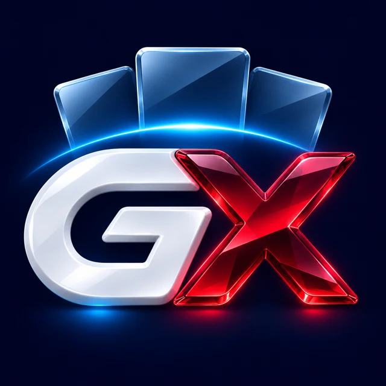
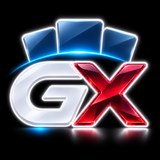
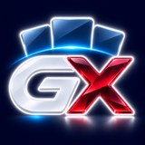
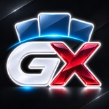
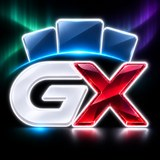
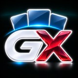
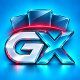
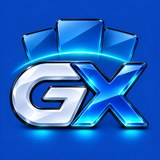
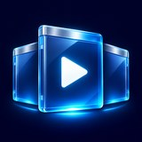
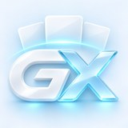

01 / DISCOVER
Cover werden
zum Erlebnis.
Coverflow, Karussell, Regal oder Wii-Kanäle. Wähle die Ansicht, die zu deiner Sammlung passt.

GX LauncherGib deinen Spielen ein Zuhause. Mit räumlichem Coverflow, deinem eigenen Look und dem direkten Weg in deinen Emulator.
Für deine eigene Bibliothek · Spiele und Emulatoren separat erforderlich
Eine Auswahl der Bibliotheks-Systeme — keine Liste der Geräte, auf denen GX läuft.
Originalaufnahmen mit echten Covern: PC-Version 3.0.1 und Android-Oberfläche aus dem APK-Build (im Browser dargestellt, keine Geräteaufnahme). Zum Vergrößern anklicken.
Von der ersten Suche bis zum nächsten Lieblingsspiel: alles an einem Ort, in deinem Stil.
Coverflow, Karussell, Regal oder Wii-Kanäle. Wähle die Ansicht, die zu deiner Sammlung passt.
Suche, Filter und eigene Sammlungen bringen Ordnung in deine Bibliothek.
Spielstände und Speicherkarten verwalten. Unterstützte Daten exportieren und sichern.
Klassisch hell, tiefes Dunkel oder ein eigener Akzent. GX bietet Designvorlagen, Farben und Effekte, die du selbst bestimmen kannst.
Alle 16 Designs ansehen ↑Lass dich vom Zufallsspiel überraschen oder entdecke alte Favoriten neu.
Pulsierendes Neon, Liquid Glass, Rubin Glow, Polarlicht und Retro-Scanlines – passend zu den GX-Icons. Aufnahmen der Android-Oberfläche mit echten Covern (im Browser dargestellt, keine Geräteaufnahme). Auf Android Teil von GX Premium, am PC frei.
Elf App-Icons zum Wechseln – direkt im Design-Fenster der App.









Für deine Spieleordner, Steam-Bibliothek und installierten Emulatoren.
Windows-Build · laut Projekt getestetROM-Ordner auswählen, Cover entdecken und mit Controller navigieren. Kompatibilität hängt von Gerät und Emulator ab.
Android-Build vorhanden · Geräte ungetestetNative Switch-, 3DS- und andere Konsolen-Ports sind hier nicht als verfügbar ausgewiesen. Eine Konsole in der Spielebibliothek ist keine Gerätefreigabe.
Nein. GX Launcher organisiert deine eigene Bibliothek und startet vorhandene Emulatoren. Spiele und Emulatoren sind separat erforderlich.
Der Umfang ist emulatorabhängig. Die Dokumentation beschreibt automatische Übernahme für Dolphin und Citra/Azahar; andere Integrationen können manuellen Import benötigen.
Die Galerie zeigt die bereitgestellten Originalaufnahmen von GX Launcher mit echten Spielecovern. Das neue Marken-Icon ist separat gestaltet.
Android für Google Play ist in Vorbereitung. Ein öffentlicher Download-Link ist noch nicht hinterlegt.
Mehr von Flondy Dev. ↗